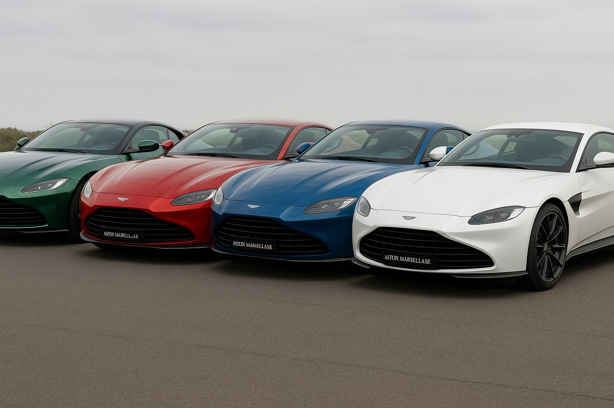

Des sportives de luxe, électriques et marseillaises.
Design, performances et élégance : Aston Marseillaise construit des voitures de sport pensées pour durer.

Présentation
Jeune marque française fondée en octobre 2025 par quatre personnes, Aston Marseillaise est connue pour ses voitures de sport de luxe qui allient design, performances et élégance.
Innovation et technologie
- ⚡Technologie électrique avancée
- ♻️Matériaux recyclés et durables
- 🔋Performance éco-efficiente
- 🧠Conception intelligente et responsable